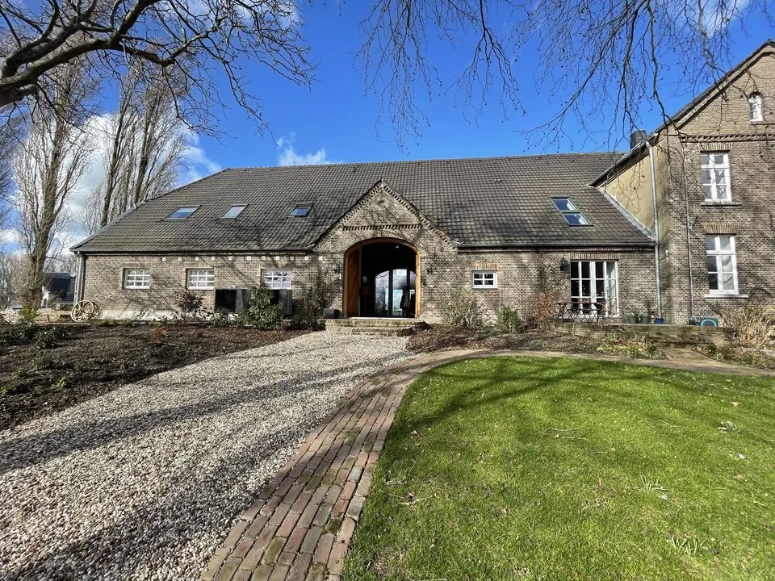
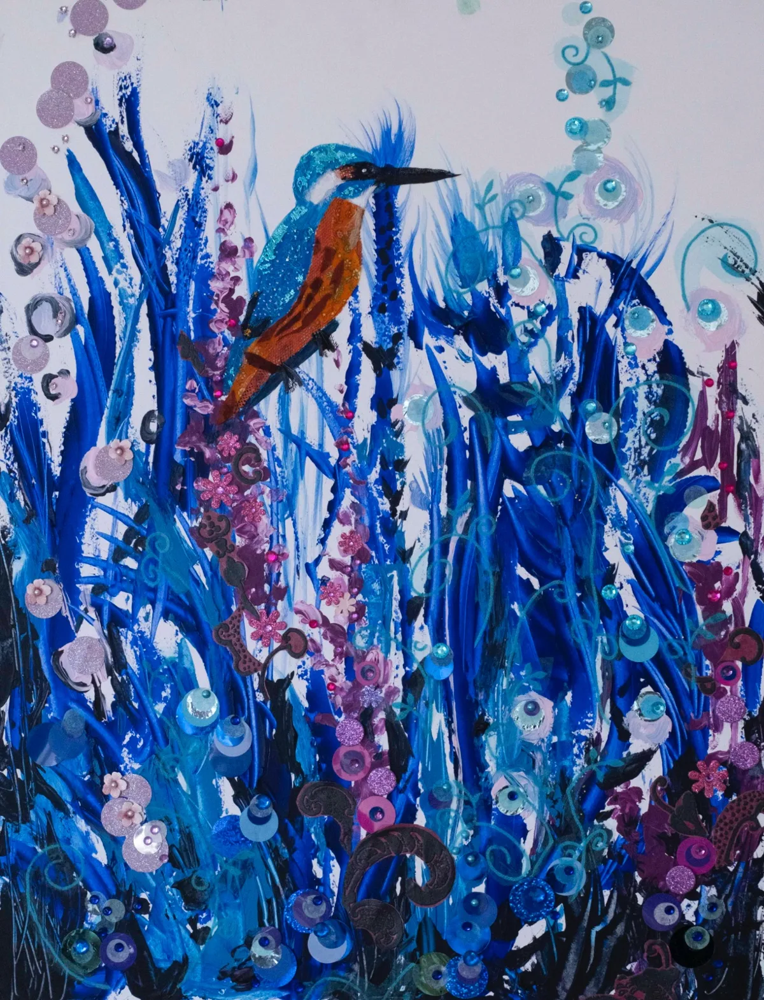
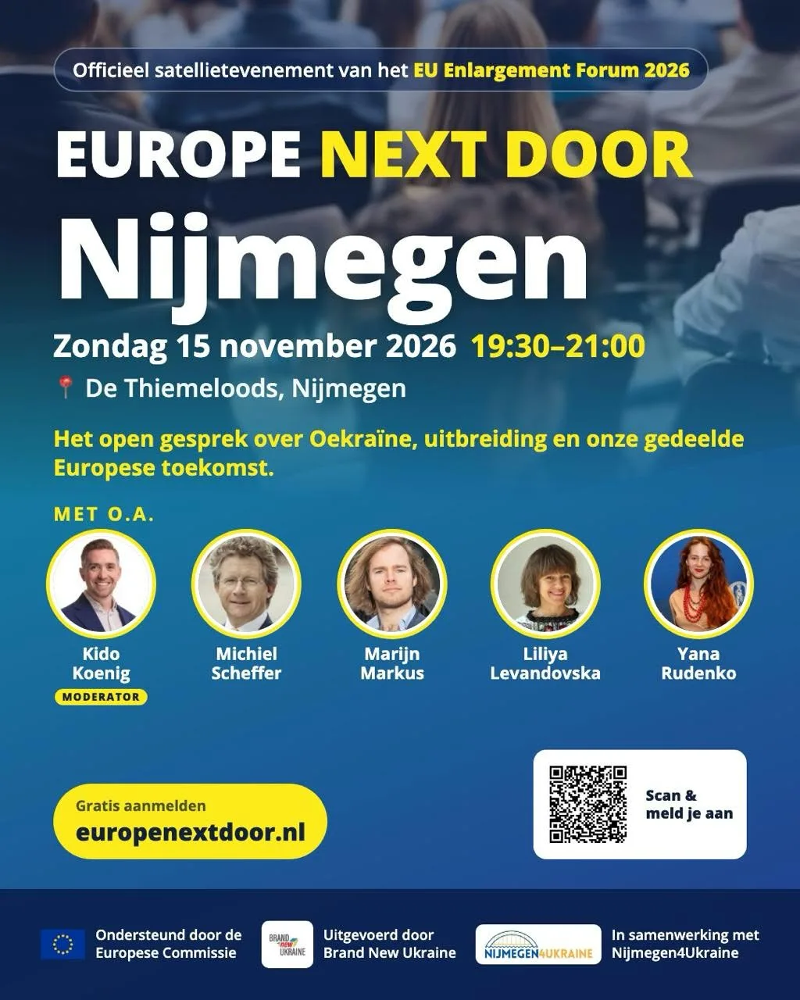

Uitgelicht evenement
Jeroen Kramer bij de Brauerij
- Wanneerzondag 10 januari 2027, 15.00 tot 17.00 uur
- WaarDe Brauerij Kranenburg
Mehrer Straße 1 Kranenburg Route - Bekijk op de website van De Brauerij Kranenburg

Jeroen Kramer brengt met ‘Dat wordt weer huilen’ een liedjesprogramma waarin humor en melancholie voortdurend naast elkaar staan. Gewapend met drie gitaren zingt hij over grote én kleine thema’s: van kinderangsten, ouder worden en de dood tot waarheid, Tesla-schaamte, een verdwenen kat en de herinnering aan zijn overleden vrouw.
De teksten zijn compact, talig en soms absurd, maar altijd persoonlijk. Tegelijkertijd kijkt Kramer naar de wereld om hem heen. Muzikaal is het programma breed: indie vormt de basis, met uitstapjes naar folk, latin, jazz, blues en zelfs een vrolijke Andalusische dans.
Zijn doel: ontroeren, troost bieden en het publiek uiteindelijk met een glimlach naar de bar sturen. Trouwens, herkennen we deze Jeroen niet van het Sinterklaasjournaal? Dat zou zo maar kunnen. Maar dit is toch echt grotemensenmuziek!
Ticketlink: https://debrauerij.nl/event/jeroen-kramer/
Over De Brauerij

De BrauerijPodium · KranenburgBekijk de bedrijfspaginaMeer evenementen bij De Brauerij Kranenburg


Binnenkort in Nijmegen
 UitgelichtPubquiz bij café ’t Haantje14 nov, 20.30 uurCafe 't Haantje Nijmegen
14nov
UitgelichtPubquiz bij café ’t Haantje14 nov, 20.30 uurCafe 't Haantje Nijmegen
14nov
Expositie “Natuurlijk in het kwadraat"14 nov – 15 nov · GratisHet Kerkje van Persingen 15nov Toonkunstkoor Nijmegen zingt Brahms15 nov, 15.00 uur · € 30Stevenskerk Nijmegen
15nov
Toonkunstkoor Nijmegen zingt Brahms15 nov, 15.00 uur · € 30Stevenskerk Nijmegen
15nov
Europe Next Door Dialoog in Nijmegen15 nov, 17.30 uur · GratisThiemeloods Nijmegen